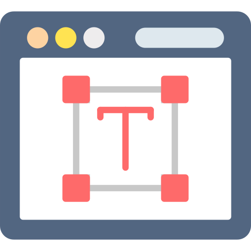

Ferramentas Web Design
Navegador
- Programa responsável por interpretar o conteúdo de um web site
- Disponibiliza a interface com a qual o usuário final irá interagir
- O layout do site pode apresentar diferenças em determinados navegadores
- É um bom hábito testar em mais de um navegador

Recursos
- Adobe Photoshop: software de edição de imagens bitmaps
- Adobe Illustrator: programa para criação de imagens vetoriais (pode redimensionar sem perder qualidade)
- Heat Maps (ou mapas de calor): ferramentas que representam, por meio de cores, o que as pessoas estão fazendo no site
- Google Fonts: biblioteca com centenas de fontes gratuitas